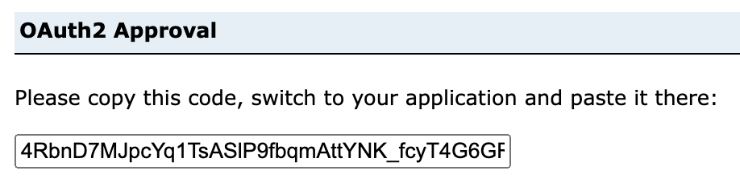

Authorization
Authorization.RmdAuthorization is required for users who wish to access data that is in a non-public ArGIS Online (AGOL) organization, in an ArcGIS Enterprise portal, or wish to upload data to or modify data in AGOL.
Authorization
is done using OAuth2. There are two ways to authenticate with
OAuth2: either by using a a code or a client
flow. The recommendation for most people is to utilize code based
authentication.
Note: users of arcgisbinding can use
auth_binding() to utilize the tokens that result from
arc.check_portal().
Tip: use client based authorization for non-interactive work.
Code based authorization
To use code based authorization use the auth_code()
function. This requires a client ID. A client
ID is a public identifier to an application that you will
authenticate against. This is the only method of
authorization that provides you with a refresh token.
Getting the Client ID
A client ID would likely be provided by an admin of an AGOL organization or ArcGIS Enterprise. In the case that you don’t have one you can more than likely create one. To create a client application log into your portal and create a new item.
Create a new Developer credentials
Ensure the redirect URL is
urn:ietf:wg:oauth:2.0:oob and keep the other
default selections. Press next and fill out additional fields.
You will be redirected to the content page. You will see credentials for your application. Do not share these.
By default environment variables will be used by
auth_code(). To edit your environment variables with your
newly created credentials use usethis::edit_r_environ()
which will open an .Renviron file for you.
User level environment variables will be used by default. If you want to use a project level
.Renvironfile useusethis::edit_r_environ("project").
Add the following lines to your .Renviron file.
ARCGIS_CLIENT=your-client-id
ARCGIS_SECRET=your-super-secret-keyThe
ARCGIS_SECRETenvironment variable will only be used inauth_client()and not necessary forauth_code().
Authorizing
First, load the library.
library(arcgis)Next run auth_code() which will open a tab in your
browser. If you are authorizing to somewhere other than AGOL, set the
host
argument—e.g. auth_code(host = "https://portal.my-company.com")
token <- auth_code()You will be prompted to sign in to your portal.
Once you’ve signed in, copy the code that appears, and return to R. Enter the code into the console without any modifications and press enter.

Your authorization will have completed.
token
#> <httr2_token>
#> token_type: bearer
#> access_token: <REDACTED>
#> expires_at: 2023-03-03 13:21:40
#> refresh_token: <REDACTED>
#> username: your-user
#> ssl: TRUE
#> refresh_token_expires_in: 1209599Refreshing tokens
auth_code() tokens can be refreshed. These tokens come
with a refresh token that can be exchanged for a new token. This can be
done with refresh_token(). It requires the original token,
client ID, and hostname (which is https://arcgis.com by default).
refresh_token(token)
#> <httr2_token>
#> token_type: bearer
#> access_token: <REDACTED>
#> expires_at: 2023-03-03 15:52:13
#> username: user-name
#> ssl: TRUE
#> refresh_token: <REDACTED>Additionally the function validate_or_refresh_token() is
provided. This can be useful if you have a very long running job that
may exceed your token’s validity. If your token is a expired, it will be
refreshed. If it is not expired, and will not expire within the
refresh_threshold, it will be returned.
Client authorization
For non-interactive workflows a client OAuth2 flow is more appropriate. This approach does not require you to copy and paste a code from the browser into your R session. This method does not generate a refresh token, though.
Use auth_client() to perform client based authorization.
auth_client() has a secret argument which, by
default, uses the environment variable ARCGIS_SECRET which
was set in your .Renviron file above. Running
auth_client()
#> <httr2_token>
#> token_type: bearer
#> access_token: <REDACTED>
#> expires_at: 2023-03-03 17:12:48Legacy Password authorization
If you find yourself on a legacy system that requires username and
password authorization, you can accomplish this with
auth_password(). While this method of authorization is not
recommended, it is still possible.
auth_user() has the arguments username and
password which, by default, use the .Renviron
environment variables ARCGIS_USER and
ARCGIS_PASSWORD. It is strongly recommended that
you use environment variables and never store your credentials in plain
text in your scripts.
auth_user()
#> <httr2_token>
#> token_type: bearer
#> access_token: <REDACTED>
#> expires_at: 2023-03-03 15:18:21